flare.cd.df$CReactiveProtein_cat<-cut(flare.cd.df$CReactiveProtein, c(0, 5, 10.0000001, Inf), labels =c("CRP < 5","5 ≤ CRP ≤ 10","CRP > 10"), include.lowest =TRUE, right =FALSE)fit<-survfit(Surv(softflare_time, softflare)~CReactiveProtein_cat, data =flare.cd.df)p<-ggsurvplot(fit, data =flare.cd.df, conf.int =TRUE, pval =TRUE, pval.method =TRUE, ggtheme =theme_minimal(), risk.table =TRUE, legend.title ="CRP", legend.labs =levels(flare.cd.df$CReactiveProtein_cat), palette =c("#1A8FE3", "#FED766", "#E76D83"), xlab ="Time from study recrutiment (days)", title ="Time to soft flare", break.time.by =200)cairo_pdf("../plots/cd/soft-flare/biochem/crp.pdf")pinvisible(dev.off())png("../plots/cd/soft-flare/biochem/crp.png", width =7, height =7, units ="in", res =300)pinvisible(dev.off())p
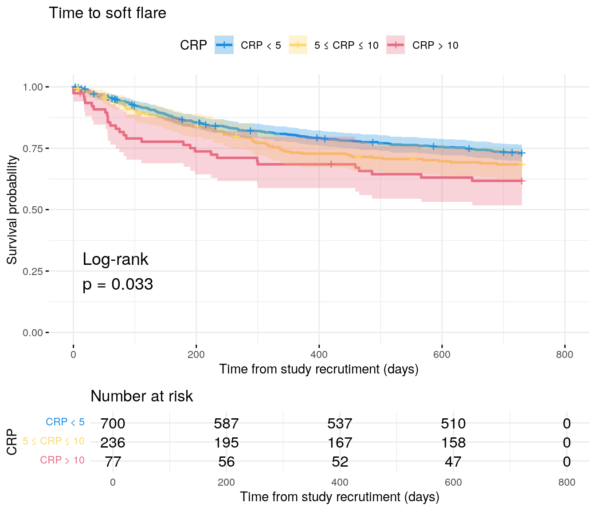
Code
fit.me<-coxph(Surv(softflare_time, softflare)~Sex+IMD+cat+CReactiveProtein+frailty(SiteNo), control =coxph.control(outer.max =20), data =flare.cd.df)invisible(cox.summary(fit.me))
Warning: `gather_()` was deprecated in tidyr 1.2.0.
ℹ Please use `gather()` instead.
ℹ The deprecated feature was likely used in the survminer package.
Please report the issue at <https://github.com/kassambara/survminer/issues>.
`geom_smooth()` using formula = 'y ~ x'
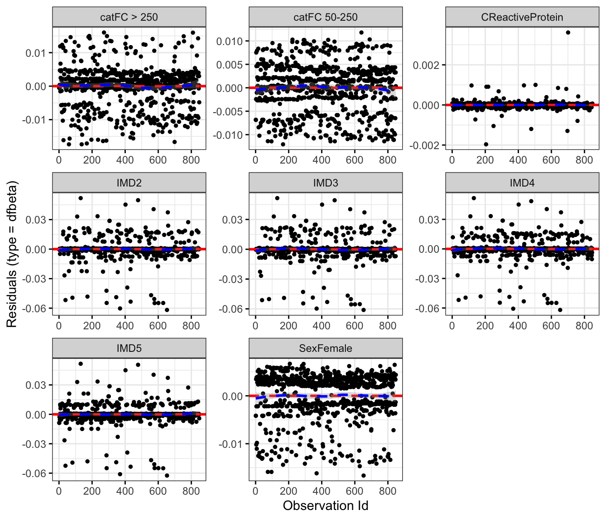
`geom_smooth()` using formula = 'y ~ x'
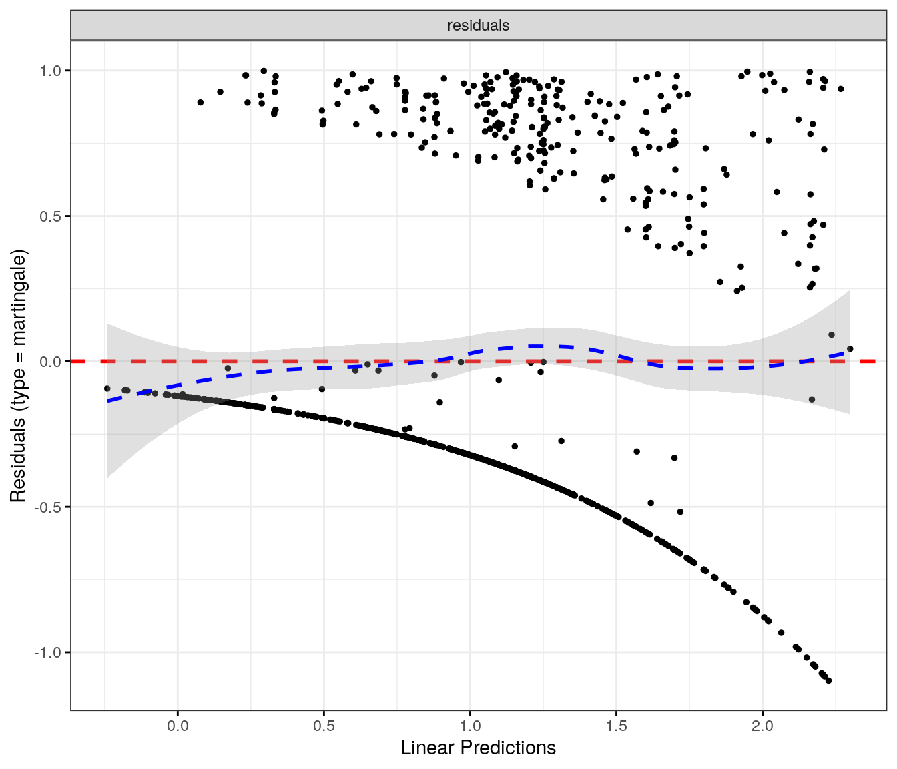
Code
fit<-survfit(Surv(hardflare_time, hardflare)~CReactiveProtein_cat, data =flare.cd.df)p<-ggsurvplot(fit, data =flare.cd.df, conf.int =TRUE, pval =TRUE, pval.method =TRUE, ggtheme =theme_minimal(), risk.table =TRUE, legend.title ="CRP", legend.labs =levels(flare.cd.df$CReactiveProtein_cat), palette =c("#1A8FE3", "#FED766", "#E76D83"), xlab ="Time from study recrutiment (days)", title ="Time to hard flare", break.time.by =500)cairo_pdf("../plots/cd/hard-flare/biochem/crp.pdf")pinvisible(dev.off())png("../plots/cd/hard-flare/biochem/crp.png", width =7, height =7, units ="in", res =300)pinvisible(dev.off())p
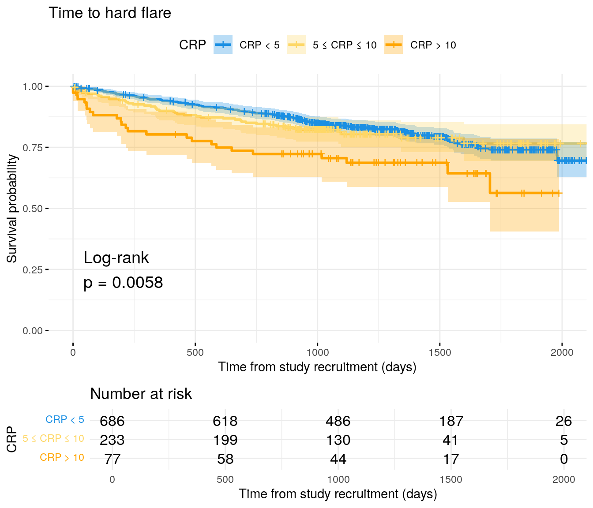
Code
fit.me<-coxph(Surv(hardflare_time, hardflare)~Sex+IMD+cat+CReactiveProtein+frailty(SiteNo), control =coxph.control(outer.max =20), data =flare.cd.df)invisible(cox.summary(fit.me))
flare.uc.df$CReactiveProtein_cat<-cut(flare.uc.df$CReactiveProtein, c(0, 5, 10.0000001, Inf), labels =c("CRP < 5","5 ≤ CRP ≤ 10","CRP > 10"), include.lowest =TRUE, right =FALSE)fit<-survfit(Surv(softflare_time, softflare)~CReactiveProtein_cat, data =flare.uc.df)p<-ggsurvplot(fit, data =flare.uc.df, conf.int =TRUE, pval =TRUE, pval.method =TRUE, ggtheme =theme_minimal(), risk.table =TRUE, legend.title ="CRP", legend.labs =levels(flare.uc.df$CReactiveProtein_cat), palette =c("#1A8FE3", "#FED766", "#E76D83"), xlab ="Time from study recrutiment (days)", title ="Time to soft flare", break.time.by =200)cairo_pdf("../plots/uc/soft-flare/biochem/crp.pdf")pinvisible(dev.off())png("../plots/uc/soft-flare/biochem/crp.png", width =7, height =7, units ="in", res =300)pinvisible(dev.off())p
Code
fit.me<-coxph(Surv(softflare_time, softflare)~Sex+IMD+cat+CReactiveProtein+frailty(SiteNo), control =coxph.control(outer.max =20), data =flare.uc.df)invisible(cox.summary(fit.me))
fit<-survfit(Surv(hardflare_time, hardflare)~CReactiveProtein_cat, data =flare.uc.df)p<-ggsurvplot(fit, data =flare.uc.df, conf.int =TRUE, pval =TRUE, pval.method =TRUE, ggtheme =theme_minimal(), risk.table =TRUE, legend.title ="CRP", legend.labs =levels(flare.uc.df$CReactiveProtein_cat), palette =c("#1A8FE3", "#FED766", "#E76D83"), xlab ="Time from study recrutiment (days)", title ="Time to hard flare", break.time.by =500)cairo_pdf("../plots/uc/hard-flare/biochem/crp.pdf")pinvisible(dev.off())png("../plots/uc/hard-flare/biochem/crp.png", width =7, height =7, units ="in", res =300)pinvisible(dev.off())p
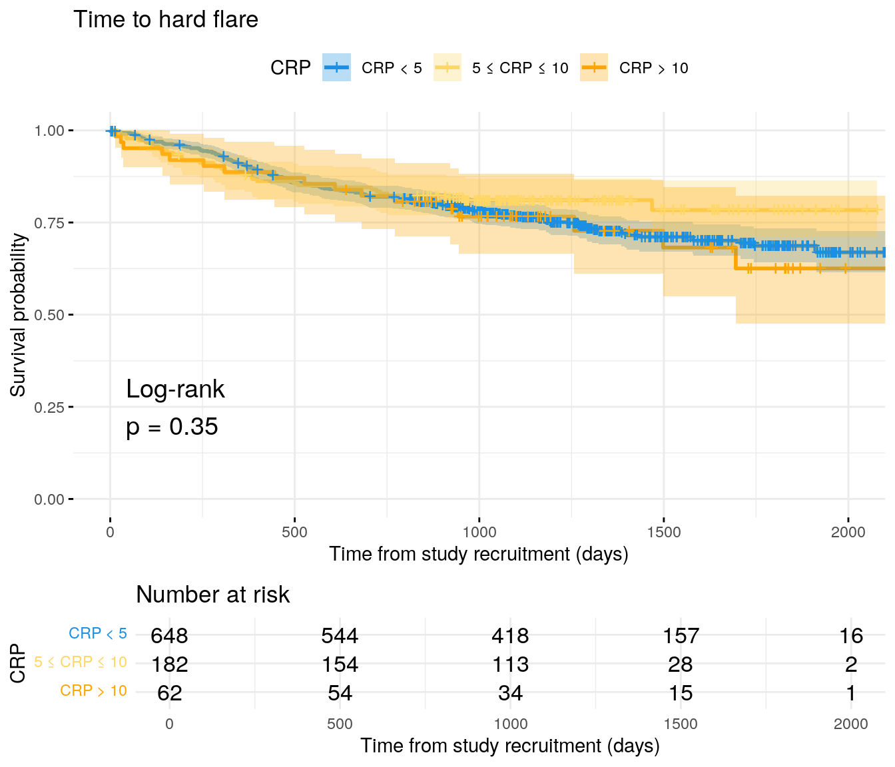
Code
fit.me<-coxph(Surv(hardflare_time, hardflare)~Sex+IMD+cat+CReactiveProtein+frailty(SiteNo), control =coxph.control(outer.max =20), data =flare.uc.df)invisible(cox.summary(fit.me))
flare.cd.df$Haemoglobin_cat<-cut(flare.cd.df$Haemoglobin,quantile(flare.df$Haemoglobin, na.rm =TRUE), include.lowest =TRUE, right =FALSE)fit<-survfit(Surv(softflare_time, softflare)~Haemoglobin_cat, data =flare.cd.df)p<-ggsurvplot(fit, data =flare.cd.df, conf.int =TRUE, pval =TRUE, pval.method =TRUE, ggtheme =theme_minimal(), risk.table =TRUE, legend.title ="Haemoglobin", legend.labs =levels(flare.cd.df$Haemoglobin_cat), palette =c("#1A8FE3", "#FED766", "orange", "#E76D83"), xlab ="Time from study recrutiment (days)", title ="Time to soft flare", break.time.by =200)cairo_pdf("../plots/cd/soft-flare/biochem/haemoglobin.pdf")pinvisible(dev.off())png("../plots/cd/soft-flare/biochem/haemoglobin.png", width =7, height =7, units ="in", res =300)pinvisible(dev.off())p
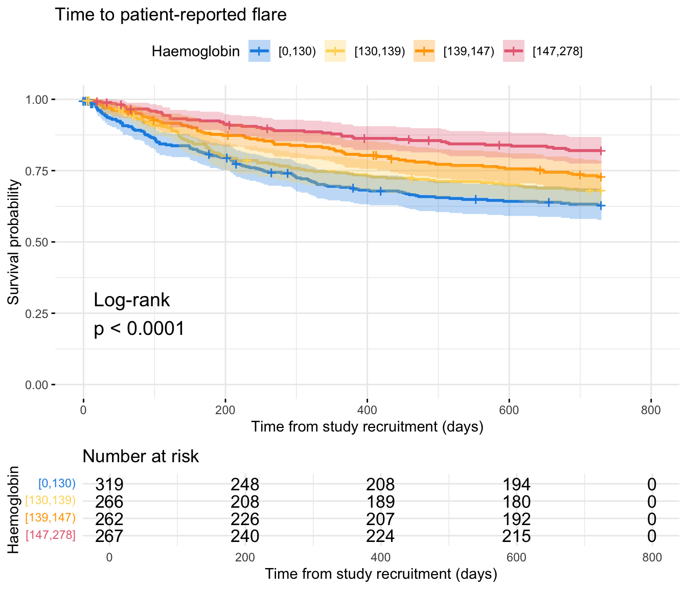
Code
fit.me<-coxph(Surv(softflare_time, softflare)~Sex+IMD+cat+Haemoglobin+frailty(SiteNo), control =coxph.control(outer.max =20), data =flare.cd.df)invisible(cox.summary(fit.me))
fit<-survfit(Surv(hardflare_time, hardflare)~Haemoglobin_cat, data =flare.cd.df)p<-ggsurvplot(fit, data =flare.cd.df, conf.int =TRUE, pval =TRUE, pval.method =TRUE, ggtheme =theme_minimal(), risk.table =TRUE, legend.title ="Haemoglobin", legend.labs =levels(flare.cd.df$Haemoglobin_cat), palette =c("#1A8FE3", "#FED766", "orange", "#E76D83"), xlab ="Time from study recrutiment (days)", title ="Time to hard flare", break.time.by =500)cairo_pdf("../plots/cd/hard-flare/biochem/haemoglobin.pdf")pinvisible(dev.off())png("../plots/cd/hard-flare/biochem/haemoglobin.png", width =7, height =7, units ="in", res =300)pinvisible(dev.off())p
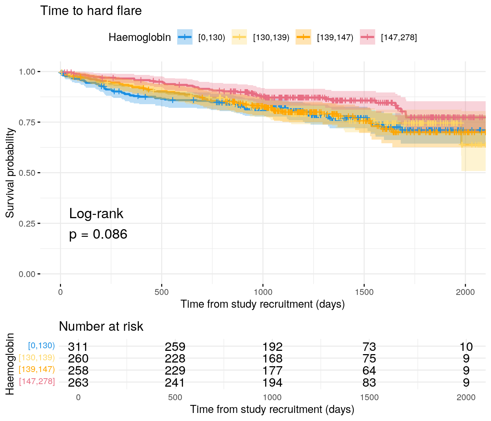
Code
fit.me<-coxph(Surv(hardflare_time, hardflare)~Sex+IMD+cat+Haemoglobin+frailty(SiteNo), control =coxph.control(outer.max =20), data =flare.cd.df)invisible(cox.summary(fit.me))
flare.uc.df$Haemoglobin_cat<-cut(flare.uc.df$Haemoglobin,quantile(flare.df$Haemoglobin, na.rm =TRUE), include.lowest =TRUE, right =FALSE)fit<-survfit(Surv(softflare_time, softflare)~Haemoglobin_cat, data =flare.uc.df)p<-ggsurvplot(fit, data =flare.uc.df, conf.int =TRUE, pval =TRUE, pval.method =TRUE, ggtheme =theme_minimal(), risk.table =TRUE, legend.title ="Haemoglobin", legend.labs =levels(flare.uc.df$Haemoglobin_cat), palette =c("#1A8FE3", "#FED766", "orange", "#E76D83"), xlab ="Time from study recrutiment (days)", title ="Time to soft flare", break.time.by =200)cairo_pdf("../plots/uc/soft-flare/biochem/haemoglobin.pdf")pinvisible(dev.off())png("../plots/uc/soft-flare/biochem/haemoglobin.png", width =7, height =7, units ="in", res =300)pinvisible(dev.off())p
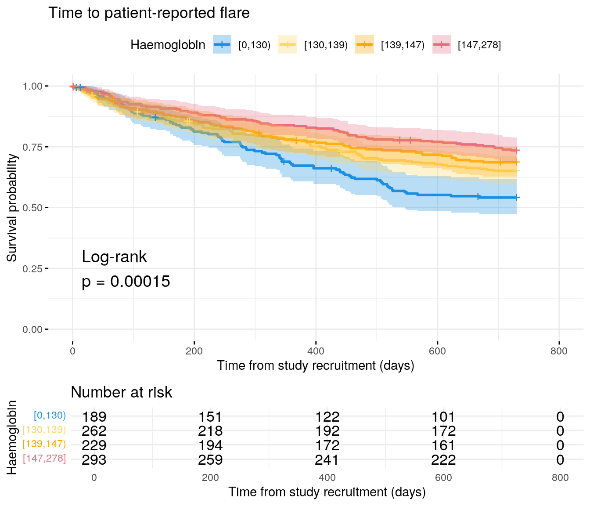
Code
fit.me<-coxph(Surv(softflare_time, softflare)~Sex+IMD+cat+Haemoglobin+frailty(SiteNo), control =coxph.control(outer.max =20), data =flare.uc.df)invisible(cox.summary(fit.me))
fit<-survfit(Surv(hardflare_time, hardflare)~Haemoglobin_cat, data =flare.uc.df)p<-ggsurvplot(fit, data =flare.uc.df, conf.int =TRUE, pval =TRUE, pval.method =TRUE, ggtheme =theme_minimal(), risk.table =TRUE, legend.title ="Haemoglobin", legend.labs =levels(flare.uc.df$Haemoglobin_cat), palette =c("#1A8FE3", "#FED766", "orange", "#E76D83"), xlab ="Time from study recrutiment (days)", title ="Time to hard flare", break.time.by =500)cairo_pdf("../plots/cd/hard-flare/biochem/haemoglobin.pdf")pinvisible(dev.off())png("../plots/cd/hard-flare/biochem/haemoglobin.png", width =7, height =7, units ="in", res =300)pinvisible(dev.off())p
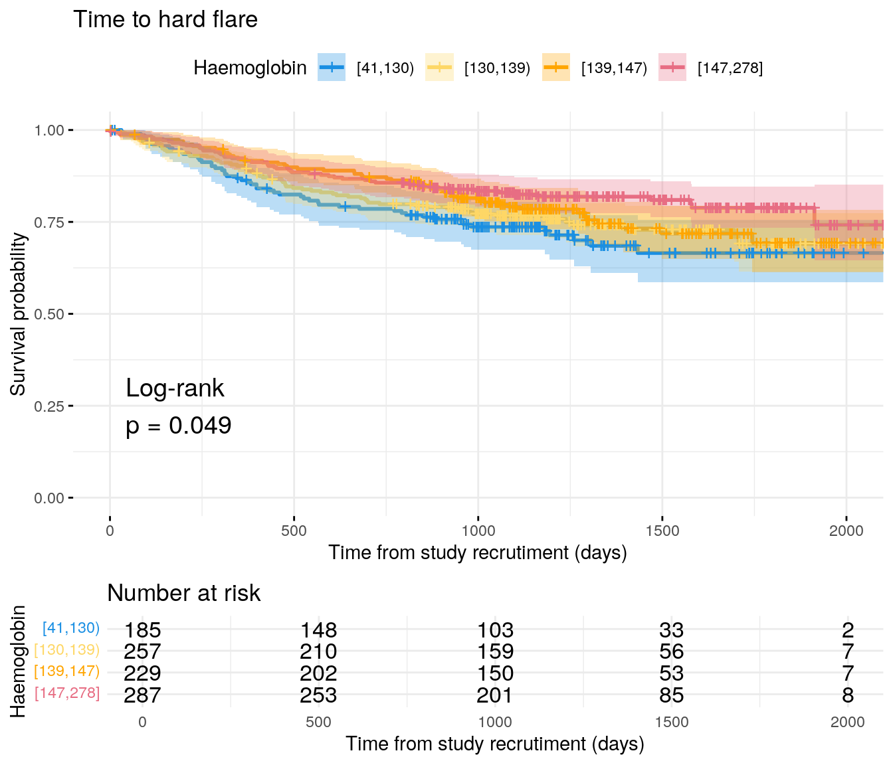
Code
fit.me<-coxph(Surv(hardflare_time, hardflare)~Sex+IMD+cat+Haemoglobin+frailty(SiteNo), control =coxph.control(outer.max =20), data =flare.uc.df)invisible(cox.summary(fit.me))
flare.cd.df$WCC_cat<-cut(flare.cd.df$WCC,quantile(flare.df$WCC, na.rm =TRUE), include.lowest =TRUE, right =FALSE)fit<-survfit(Surv(softflare_time, softflare)~WCC_cat, data =flare.cd.df)p<-ggsurvplot(fit, data =flare.cd.df, conf.int =TRUE, pval =TRUE, pval.method =TRUE, ggtheme =theme_minimal(), risk.table =TRUE, legend.title ="White cell count", legend.labs =levels(flare.cd.df$WCC_cat), palette =c("#1A8FE3", "#FED766", "orange", "#E76D83"), xlab ="Time from study recrutiment (days)", title ="Time to soft flare", break.time.by =200)cairo_pdf("../plots/cd/soft-flare/biochem/wcc.pdf")pinvisible(dev.off())png("../plots/cd/soft-flare/biochem/wcc.png", width =7, height =7, units ="in", res =300)pinvisible(dev.off())p
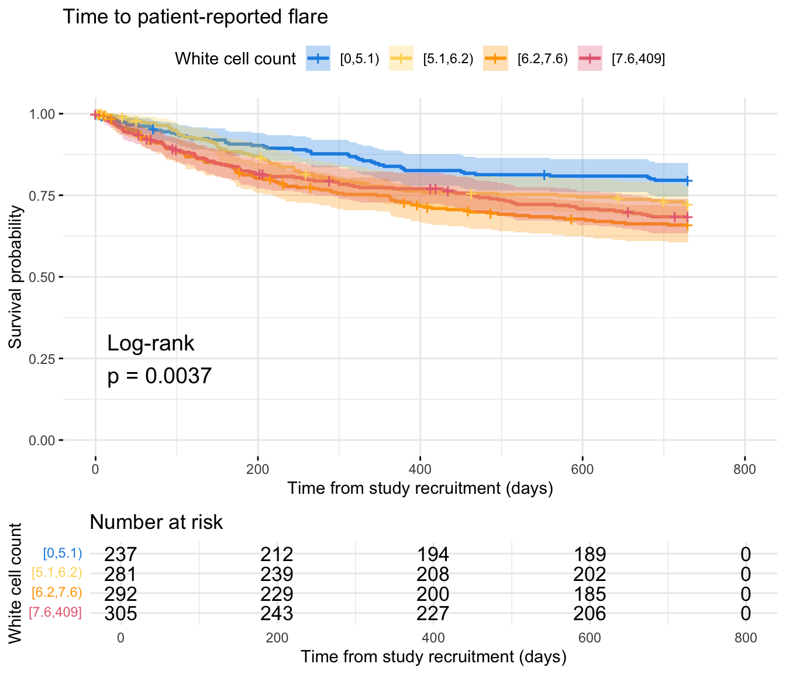
Code
fit.me<-coxph(Surv(softflare_time, softflare)~Sex+IMD+cat+WCC+frailty(SiteNo), control =coxph.control(outer.max =20), data =flare.cd.df)invisible(cox.summary(fit.me))
fit<-survfit(Surv(hardflare_time, hardflare)~WCC_cat, data =flare.cd.df)p<-ggsurvplot(fit, data =flare.cd.df, conf.int =TRUE, pval =TRUE, pval.method =TRUE, ggtheme =theme_minimal(), risk.table =TRUE, legend.title ="White cell count", legend.labs =levels(flare.cd.df$WCC_cat), palette =c("#1A8FE3", "#FED766", "orange", "#E76D83"), xlab ="Time from study recrutiment (days)", title ="Time to hard flare", break.time.by =500)cairo_pdf("../plots/cd/hard-flare/biochem/wcc.pdf")pinvisible(dev.off())png("../plots/cd/hard-flare/biochem/wcc.png", width =7, height =7, units ="in", res =300)pinvisible(dev.off())p
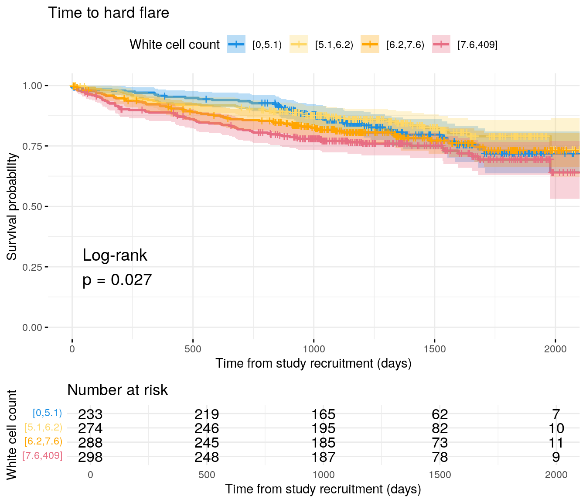
Code
fit.me<-coxph(Surv(hardflare_time, hardflare)~Sex+IMD+cat+WCC+frailty(SiteNo), control =coxph.control(outer.max =20), data =flare.cd.df)invisible(cox.summary(fit.me))
flare.uc.df$WCC_cat<-cut(flare.uc.df$WCC,quantile(flare.df$WCC, na.rm =TRUE), include.lowest =TRUE, right =FALSE)fit<-survfit(Surv(softflare_time, softflare)~WCC_cat, data =flare.uc.df)p<-ggsurvplot(fit, data =flare.uc.df, conf.int =TRUE, pval =TRUE, pval.method =TRUE, ggtheme =theme_minimal(), risk.table =TRUE, legend.title ="White cell count", legend.labs =levels(flare.uc.df$WCC_cat), palette =c("#1A8FE3", "#FED766", "orange", "#E76D83"), xlab ="Time from study recrutiment (days)", title ="Time to soft flare", break.time.by =200)cairo_pdf("../plots/uc/soft-flare/biochem/wcc.pdf")pinvisible(dev.off())png("../plots/uc/soft-flare/biochem/wcc.png", width =7, height =7, units ="in", res =300)pinvisible(dev.off())p
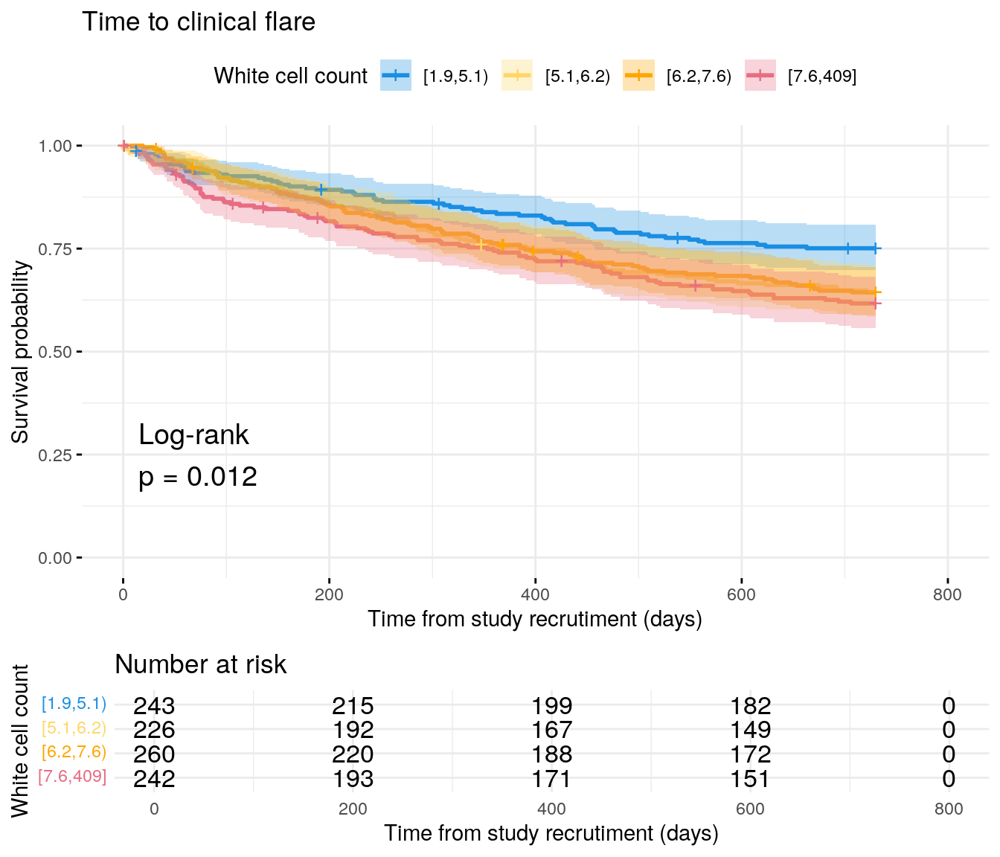
Code
fit.me<-coxph(Surv(softflare_time, softflare)~Sex+IMD+cat+WCC+frailty(SiteNo), control =coxph.control(outer.max =20), data =flare.uc.df)invisible(cox.summary(fit.me))
fit<-survfit(Surv(hardflare_time, hardflare)~WCC_cat, data =flare.uc.df)p<-ggsurvplot(fit, data =flare.uc.df, conf.int =TRUE, pval =TRUE, pval.method =TRUE, ggtheme =theme_minimal(), risk.table =TRUE, legend.title ="White cell count", legend.labs =levels(flare.uc.df$WCC_cat), palette =c("#1A8FE3", "#FED766", "orange", "#E76D83"), xlab ="Time from study recrutiment (days)", title ="Time to hard flare", break.time.by =500)cairo_pdf("../plots/uc/hard-flare/biochem/wcc.pdf")pinvisible(dev.off())png("../plots/uc/hard-flare/biochem/wcc.png", width =7, height =7, units ="in", res =300)pinvisible(dev.off())p
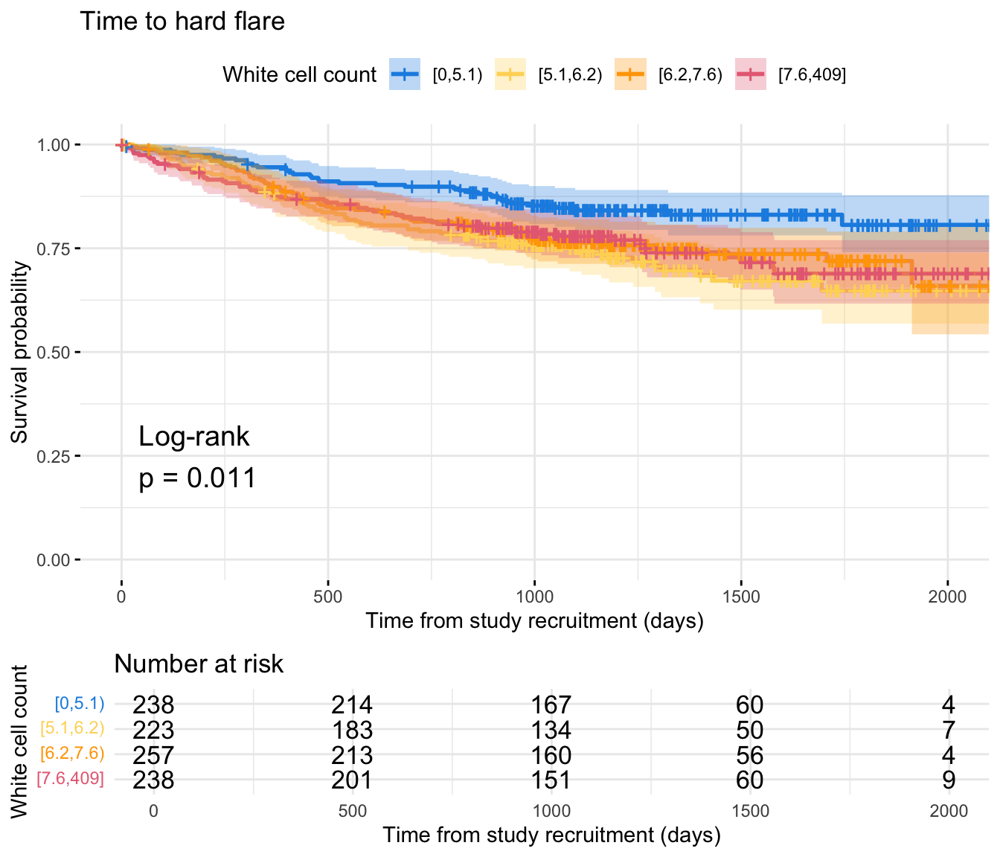
Code
fit.me<-coxph(Surv(hardflare_time, hardflare)~Sex+IMD+cat+WCC+frailty(SiteNo), control =coxph.control(outer.max =20), data =flare.uc.df)invisible(cox.summary(fit.me))
flare.cd.df$Albumin_cat<-cut(flare.cd.df$Albumin,quantile(flare.df$Albumin, na.rm =TRUE), include.lowest =TRUE, right =FALSE)fit<-survfit(Surv(softflare_time, softflare)~Albumin_cat, data =flare.cd.df)p<-ggsurvplot(fit, data =flare.cd.df, conf.int =TRUE, pval =TRUE, pval.method =TRUE, ggtheme =theme_minimal(), risk.table =TRUE, legend.title ="Albumin", legend.labs =levels(flare.cd.df$Albumin_cat), palette =c("#1A8FE3", "#FED766", "orange", "#E76D83"), xlab ="Time from study recrutiment (days)", title ="Time to soft flare", break.time.by =200)cairo_pdf("../plots/cd/soft-flare/biochem/albumin.pdf")pinvisible(dev.off())png("../plots/cd/soft-flare/biochem/albumin.png", width =7, height =7, units ="in", res =300)pinvisible(dev.off())p
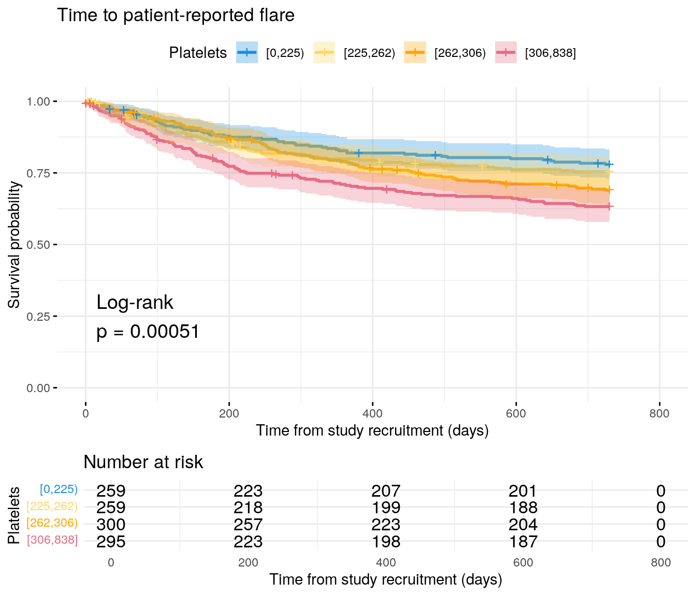
Code
fit.me<-coxph(Surv(softflare_time, softflare)~Sex+IMD+cat+Albumin+frailty(SiteNo), control =coxph.control(outer.max =20), data =flare.cd.df)invisible(cox.summary(fit.me))
fit<-survfit(Surv(hardflare_time, hardflare)~Albumin_cat, data =flare.cd.df)p<-ggsurvplot(fit, data =flare.cd.df, conf.int =TRUE, pval =TRUE, pval.method =TRUE, ggtheme =theme_minimal(), risk.table =TRUE, legend.title ="Albumin", legend.labs =levels(flare.cd.df$Albumin_cat), palette =c("#1A8FE3", "#FED766", "orange", "#E76D83"), xlab ="Time from study recrutiment (days)", title ="Time to hard flare", break.time.by =500)cairo_pdf("../plots/cd/hard-flare/biochem/albumin.pdf")pinvisible(dev.off())png("../plots/cd/hard-flare/biochem/albumin.png", width =7, height =7, units ="in", res =300)pinvisible(dev.off())p
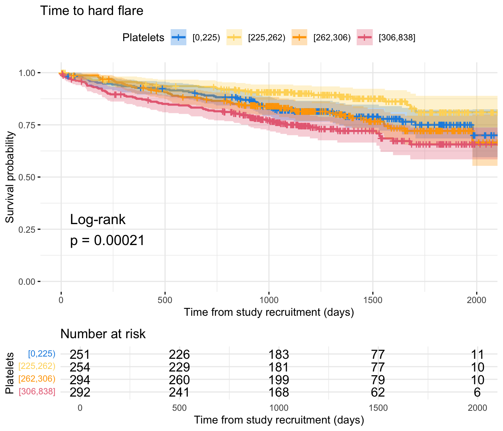
Code
fit.me<-coxph(Surv(hardflare_time, hardflare)~Sex+IMD+cat+Albumin+frailty(SiteNo), control =coxph.control(outer.max =20), data =flare.cd.df)invisible(cox.summary(fit.me))
flare.uc.df$Albumin_cat<-cut(flare.uc.df$Albumin,quantile(flare.df$Albumin, na.rm =TRUE), include.lowest =TRUE, right =FALSE)fit<-survfit(Surv(softflare_time, softflare)~Albumin_cat, data =flare.uc.df)p<-ggsurvplot(fit, data =flare.uc.df, conf.int =TRUE, pval =TRUE, pval.method =TRUE, ggtheme =theme_minimal(), risk.table =TRUE, legend.title ="Albumin", legend.labs =levels(flare.uc.df$Albumin_cat), palette =c("#1A8FE3", "#FED766", "orange", "#E76D83"), xlab ="Time from study recrutiment (days)", title ="Time to soft flare", break.time.by =200)cairo_pdf("../plots/uc/soft-flare/biochem/albumin.pdf")pinvisible(dev.off())png("../plots/uc/soft-flare/biochem/albumin.png", width =7, height =7, units ="in", res =300)pinvisible(dev.off())p
Code
fit.me<-coxph(Surv(softflare_time, softflare)~Sex+IMD+cat+Albumin+frailty(SiteNo), control =coxph.control(outer.max =20), data =flare.uc.df)invisible(cox.summary(fit.me))
fit<-survfit(Surv(hardflare_time, hardflare)~Albumin_cat, data =flare.uc.df)p<-ggsurvplot(fit, data =flare.uc.df, conf.int =TRUE, pval =TRUE, pval.method =TRUE, ggtheme =theme_minimal(), risk.table =TRUE, legend.title ="Albumin", legend.labs =levels(flare.uc.df$Albumin_cat), palette =c("#1A8FE3", "#FED766", "orange", "#E76D83"), xlab ="Time from study recrutiment (days)", title ="Time to hard flare", break.time.by =500)cairo_pdf("../plots/uc/hard-flare/biochem/albumin.pdf")pinvisible(dev.off())png("../plots/uc/hard-flare/biochem/albumin.png", width =7, height =7, units ="in", res =300)pinvisible(dev.off())p
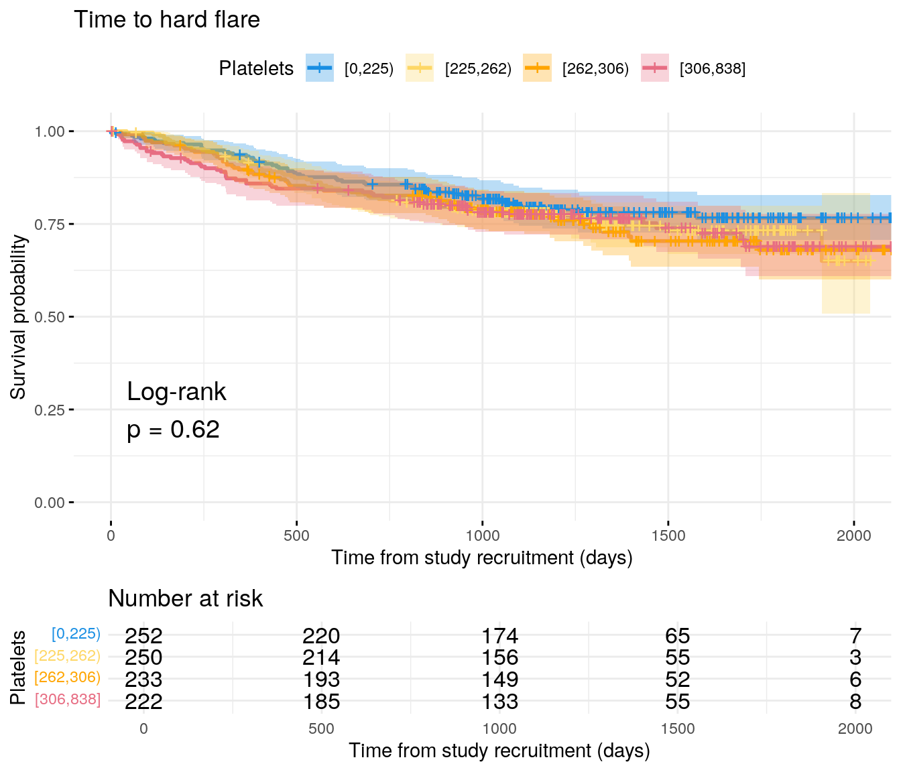
Code
fit.me<-coxph(Surv(hardflare_time, hardflare)~Sex+IMD+cat+Albumin+frailty(SiteNo), control =coxph.control(outer.max =20), data =flare.uc.df)invisible(cox.summary(fit.me))